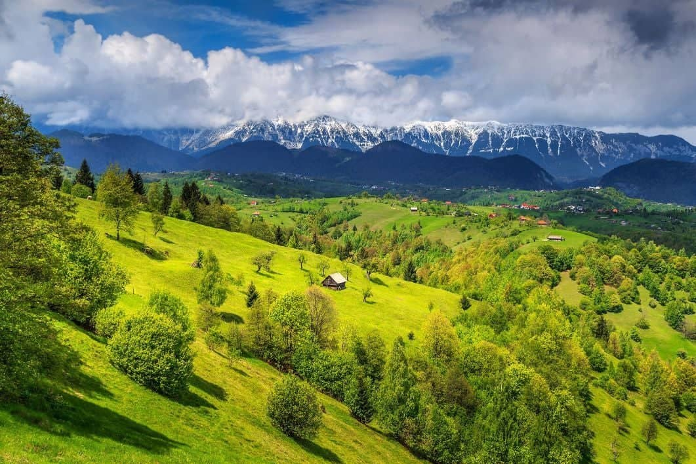

On this page we are going to talk about Romania's breathtaking landscapes & the incredible wildlife it has.
Here's some pictures of Romanian wildlife and awesome landscapes:
Alpine splendor in Bucegi: unique rock formations, Sphinx, Babele, and panoramic views.

Romania's wild Carpathians: dense forests, alpine meadows, home to bears, wolves, and chamois.Carpathian habitat shelters brown bears; conservation efforts focus on preserving Romania's iconic species.Transylvania's medieval charm: Bran Castle on rocky hills, rich history, and architectural allure.
"Words are not just words. They are a conveyance of spirit, a language of the soul."
Herta Müller, Nobel Prize-winning Romanian Author
Want to learn more?
Sign up to be able to receive more interesting emails about our planet's amazing wildlife and nature.